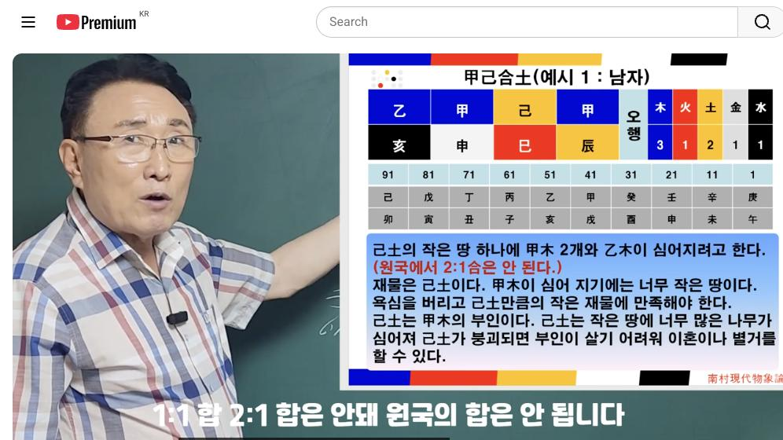
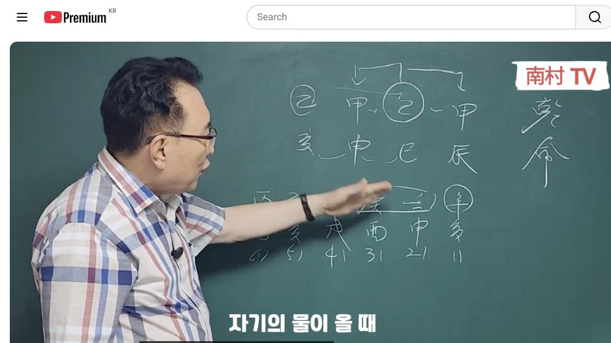
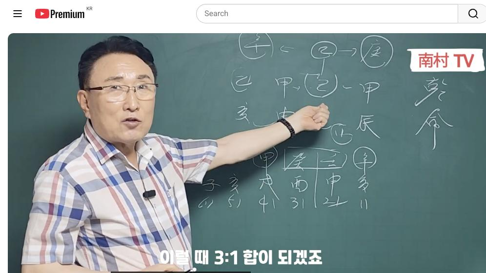

남촌물상TV 전체 문서 › 동영상 V0006
[실전사례]1 차마 책에 쓸수 없는 갑기합의 실전사례

| 문서 번호 | V0006 (동영상) |
|---|---|
| 영상 URL | https://www.youtube.com/watch?v=Yl6aPGh3HgE |
| 영상 ID | Yl6aPGh3HgE |
| 게시일 | 2023-08-21 |
| 길이 | 10:35 (635초) |
| 조회수 | 17,033회 (수집 시점 기준) |
| 카테고리 | People & Blogs |
| 자막 | ko (자동생성) |
| 수집 시각 | 2026-08-30 19:08 (KST) |
영상 설명 (YouTube 설명 원문 그대로)
기가막힌 갑기합의 원리 적용사례, 일간이 갑 을목인 분들 안보시면 후회합니다 #실전사례 #갑기합 #차마 #책에쓸수없는 #격국 #용신 #포태법 #12운성 #12신살 #사주팔자 #사주명리학 #사주공부 #물상론 #명리학강의 #물상명리 #성명학 #관상 #천간합의원리#명리기초 #철학관 #대영작명철학원 #만세력 #남촌물상명리 #명리학 #사주 #궁합 #사주MBTI #사주분석 #사주궁합 #사주직업 #남촌물상tv #남촌물상론 #천간합 #기가막힌 #일간 #갑목 #갑기합토
전체 자막 (279구간 · 타임스탬프 클릭 시 해당 장면으로 이동)
[0:01][음악]
[0:07]안녕하세요
[0:09]지난번 시간에 제가 의경 하부를
[0:11]한다고 했었는데 그 일단 각기합을
[0:13]배웠기 때문에 예시 문제로 그러면 그
[0:16]각기 합을 가지고
[0:18]어떤 식의 사주를 풀 수 있는가 이런
[0:21]방법을 한번 설명을 간단하게 드리고자
[0:23]합니다
[0:24]물론 기초를 전혀 잘 그 모르시는
[0:26]분들 계시기 때문에
[0:27]아마 이해하기는 좀 어렵겠습니다만은
[0:30]저희 남촌물산
[0:33]현대불성에 보면
[0:35]기초의 자세히 설명이 되어 있습니다
[0:36]그래서 책도 시중에서 만판이 되어
[0:39]있을 거예요 여러분들이
[0:40]꼭 필요하시면 저한테 연락 주시면 그
[0:43]설명을 드리겠습니다
[0:46]갑진 기사 갑신을리다 이제 이런 그
[0:50]사주가 있습니다
[0:51]현재 자 그러면
[0:53]여기에 이제
[0:55]기토가 아까 전 시간에 배웠던 거
[0:58]기토가 각기합이 돼 있다고 봐야죠
[1:00]이런
[1:02]경우를
[1:03]간단히 설명을 드리자면
[1:06]여기에 쉽게 해서 2대1 합은 우리
[1:09]물상으로 지금 안 되는 걸로 지금
[1:11]배우고 있어요 기출에 설명을 제가 못
[1:12]드렸습니다만은 일대일합 2:1 하면
[1:16]안 돼 원국의 학원 안 됩니다
[1:18]운에서 오는 합은 다 돼요 3대 1
[1:21]합은 된다 이게 기본적인 공식이에요
[1:24]다른 데에서는 공식이
[1:26]딱 정이 되기 때문에이 공식을 활용을
[1:29]하게 되면 아주 쉽게 볼 수가 있는
[1:31]거예요 저희들이 이제 나중에 보시면
[1:33]이제 직업 찾는 법도
[1:35]이런 부분이 굉장히 다양하게 아주
[1:39]적중이 높은 방법을 채택해 드립니다
[1:41]공식적으로 돼 있어요
[1:43]쉽지만
[1:44]우선
[1:45]기토가 갑목에 심어지는 과정을 한번
[1:47]설명을 드리고자 한다 그 말입니다
[1:50]우선이 키토는 자 카키 합이 좀 안
[1:54]되고 있어요 2대1 학원 본등이 안
[1:55]된다고 했습니다
[1:57]근데이 을목이 여기에
[2:00]심어질 수도 있다
[2:03]작은 땅에 작은 나무가 심을 수
[2:04]있는데 큰 땅은 결국 갑목들
[2:06]모심어진다는 얘기에요 자 그러면
[2:10]감무 물상도에서는
[2:12]갑목이 기초에 10억이나 기토가
[2:15]갑목이 심어지나 남녀 급여를 똑같이
[2:17]보시면 됩니다 그래서 여기 볼 때
[2:19]남자니까 제가 이거다 여자다 또
[2:22]기초가에도 관여 똑같습니다 상관없어요
[2:24]심어진 과정은 일간 중심으로 해서
[2:27]어떻게
[2:29]활용할 것인가를 설명을 드릴 거거든요
[2:32]그럼 원룸 생각할 때 우리 간다고
[2:35]생각하면이 사주 보면 자 우리가 땅에
[2:38]나무를 심는다는 것은 한 가정이
[2:41]정착하는 걸로 이해하시면 됩니다 그럼
[2:43]각기 합으로
[2:45]할 수 있는 거예요
[2:49]근데이
[2:50]작은 땅에 큰 나무가 심어지기
[2:52]때문에이 사람은 가정이 엄마치 못해
[2:54]그 말이에요
[2:56]그러면 여기에 기초에 땅을 놓고이
[2:59]갑목도 여기 심어지고 여러분도 여기
[3:01]심어지고 요놈도 다
[3:02]땅 작은 단어를 놓고
[3:05]여럿이 다
[3:06]땅에 차지하는 그런 사전이에요 그럼
[3:09]우리가 봤을 때 이제이 사주의 천간의
[3:12]원리에서
[3:13]이런 과정이 있는데
[3:15]취지는 그럼 뭐냐 지진은
[3:18]천간 목표의 행동 움직이는 것이
[3:21]지지예요 자 그렇다면
[3:24]지지는 뭐예요
[3:26]새 신이 있고 살아있을까 아 인신사의
[3:28]개념이다
[3:29]이신사의 개념은 우리 죄가 보는
[3:31]물상물에서는 우리가
[3:34]생지코지를 그렇게 합니다마는
[3:35]어떤 개혁적인 거
[3:37]추진력 모든 그 이런 거 활동적인 일
[3:41]어떤 마케팅 전략 이런 쪽을 우리는
[3:44]인신사의 개념으로 쓰고 있습니다
[3:47]자 그럼이 사람이 인신사역 개념이다
[3:50]아하
[3:51]활동적이 일어난 사람이네 자 이걸
[3:54]먼저 봐야 되고 그 다음에 그 다음에
[3:57]없는 노행이 있는가 없는가를 봐 보죠
[4:00]그럼 자
[4:01]목생화
[4:03]화생토
[4:04]토생금
[4:05]금생수 5호 뭐가 없을까요 세수
[4:09]물 다 있네 오행은 다 있어요
[4:11]근데
[4:13]작은 땅에이 갑목들의 다 심어지기
[4:16]때문에 문제가 된 것이죠 그럼 이런
[4:19]사람 어떨까요
[4:20]작은 제물로만 만족으로 쳐야 되는
[4:22]사람이에요 더 이상의 욕심을 취한다는
[4:25]얘기는 무슨 얘기일까
[4:27]작은 땅이 무너진다는 얘기
[4:28]아니겠습니까
[4:29]그러면
[4:31]이 사람은 소위 직업상을 볼 때
[4:33]사업을 해야 할 사람이냐 예를 들어서
[4:36]조직성을
[4:39]해야 할 사람이냐
[4:40]차근득 사업하는 사람 돈을 많이
[4:42]벌지만 조직 시험한 사람 한정된
[4:44]생활하기 때문에 조직생활을
[4:46]해야 할 사람이다라고 본다 그럼 각기
[4:49]합이 이제 되고 안 되고를 떠나서
[4:51]일단은이 과정을 설명을 드렸는데
[4:54]운에서만 보자고 말이야 운에서 자
[4:56]운에서 볼 때는
[4:59]초장에 이게 보면 11일째 11살부터
[5:02]20살까지이 사람 운이에요
[5:05]그러면 여기서 일신 사이란 것도
[5:07]개혁적인 일이 되겠죠 그 여기는
[5:09]초점을 여기에서 이제 핵심적인
[5:11]이야기가 나오고 있죠 자 그러면
[5:14]물이 온다는 얘기 아닙니까 아까
[5:15]우리가 앞선 시간에 볼 때 자기의
[5:18]물이 올 때 나무가 심어진다고 하면
[5:21]이걸 깨질 것이 안 낄 것이냐를
[5:23]얘기했다 그 말이에요 자 그러면은
[5:27]물이 나무가 성장한다는 얘기는 여기에
[5:30]나무가 심어서는 재물이 움직인다는
[5:32]얘기에요 제가 어떻게 변화하느냐에
[5:35]따라 달라요
[5:36]그러면 물이 오기 때문에 반드시
[5:38]좋겠죠
[5:39]그러면이 작은 체험지 자기가 심어져야
[5:42]되는데 여기 을목이 심어진 거는
[5:44]상관이 없어요
[5:45]을목이 심어진다는 얘기는 무슨 얘기냐
[5:46]여기 이제 구체적인 얘기를 제가 할
[5:49]수가 지금 기초로 할 수가 없는데
[5:50]여기에
[5:52]을목이 심어졌다는 관계를 잠깐 설명을
[5:54]드리고 넘어가렵니다 자 무슨 얘기냐
[5:56]그러면
[5:57]이 을목이 여기에 심어졌다는 얘기는
[6:02]이 을목이 여기 심은 필요한게 뭐냐
[6:05]그 말이에요
[6:07]자 그럼 을목이 된다는 얘기는
[6:09]여기에서는 우리 항시 아까이 다음
[6:12]시간에 배울
[6:13]을경합을
[6:16]얘기할 수 있다 그런 법칙을 얘기한단
[6:17]말이야
[6:18]그러면 여기 심어졌다 과장했을 때
[6:22]을경합은
[6:23]뭘로 바뀌었어요 신금으로 베낀다고
[6:25]배워요
[6:30]뿌리가 뭐냐 유금이죠
[6:33]구체적인 시작하면 굉장히 기니까
[6:35]간단하게 설명을 드리자면이 사람
[6:37]입장에서는
[6:38]촌년에이 유금의 뿌리가 입이라고
[6:41]그래요
[6:44]어떤 먹는 거
[6:45]기술적인 요인 다 설명을 드리세요
[6:47]이게 이제 이게 그 유금의 형태인데
[6:50]유공을 쓴다니까 사유축이 요금이 되네
[6:53]그 말이에요 그럼 자기의 신고서
[6:56]요금이 되면
[6:59]결과 인신 사이가 딱 되잖아요 유금을
[7:01]쓰는이 신사에다 보면 돼
[7:03]그러니까
[7:04]의학 먹는 거 또 우리가
[7:06]어떤 기술적인 요인
[7:08]갑목이기 때문에 안 되는 거죠
[7:10]그렇기 때문에이 사람은 유금을 쓰는
[7:12]행위를 할 것으로 본다 그 말이에요
[7:16]그러면 요금을 쓴다는 인신 사회가
[7:17]되겠죠 그러면 자이이
[7:20]초년에이 운이 있는 것은
[7:23]첩의 운을
[7:29]그러면 활동력 이런 치료조직자들이
[7:31]뭡니까 바깥에서 영업 활동한 걸
[7:33]얘기하겠죠 그럼 그 중에서도 어떤 거
[7:35]유금을 쓰는 집 제약회사 이런 쪽에
[7:39]관계된 일을 하게 된다고 간단히 할
[7:42]수 있는 거예요 그래서 불상으로 이제
[7:44]구체적으로 설명하면 길어지는데
[7:47]간단한 합이 돼 있을 때 안 됐을 때
[7:48]2대1 학원 안 되고 3대 1 합은
[7:52]된다
[7:52]그러면 여기 이제 세계가 올 때
[7:54]아닙니까 이럴 때 3대 1 합이
[7:56]되겠죠 그러면 여기에서 3대 1의
[7:59]합이 각기 합토 그럼 각 기합이 뭘
[8:02]을목으로 변했다 한 얘기는 여기에서
[8:05]그렇게 해석하지만
[8:07]갑목이 세 개가 다 심어진다고
[8:09]봐보세요 그럼 어떻게 할까요
[8:11]갑목이 깨지는 시점 아니겠어요
[8:14]그런데 여기에 여기에
[8:17]어떤 얘기일까
[8:19]술토라는 것은
[8:22]사오미의 오가 올 수도 있고
[8:24]갑목의 인원술도 될 수 있고
[8:27]신유술도 될 수 있고 여기에 큰 뜻을
[8:29]가지고 있어요 그럼이 사람들이 제일
[8:31]문제가 된게 어떠냐
[8:32][음악]
[8:34]각기합이 세계에 왔을 때 다 묶어놓고
[8:36]보면
[8:38]그래도 그래도
[8:39]갑목들이 뿌리가 현재 형성되지 않았기
[8:41]때문에 그래도 견디었어요 그러나
[8:44]갑목은 갑목이에요 썩어도 준치야
[8:47]그렇기 때문에
[8:48]갑목이 이게 깨지는 시점이다
[8:51]그러면 어떻게 될까요 여기에
[8:52]부인이라는 사람은
[8:54]결과적으로 여기에서
[8:56]실패할 수밖에 없다
[8:58]물 먹었지 계속 나무를 성장했지
[9:01]큰 나무들이 오게 되면 자동으로
[9:03]기토해서 땅이 못살게 되기 때문에이
[9:05]사람은 자 물을 섭취하다 보면은
[9:10]기토가 깨질 수밖에 없다
[9:12]그러한 가정이 파괴됐다는 얘기가
[9:14]나와요 그래서
[9:16]간단하게 우리 물성을 보면
[9:20]작은 땅에서 큰 나무가 살게 보면
[9:22]수를 거치게 되면 반드시 한 가정이
[9:26]깨지는구나 하는 걸 알 수가 있죠
[9:27]그래서
[9:29]쉽게 사주를 볼 수 있는 방법이 저희
[9:31]물성호입니다 그래서이
[9:33]각기합의 원리를 가지고 그 사용하는
[9:36]방법과 2대1 합이 안 된다는 법
[9:39]중요한 건 핵심 2:1 합은 원국에서
[9:41]되지 않는다는 점 일대일합은 된다는
[9:44]점 3대 1 합을 합이 된다는 거
[9:46]이것을 이해하시고 넘어가시면 아마 그
[9:49]다음 시간에도 쉽게 이해할 겁니다
[9:51]그래서
[9:52]천간항식 목표고 지지는 행동이기
[9:54]때문에이 사람이 갑목으로서
[9:58]을목으로서 행하실 수 있는 일이
[9:59]무엇인가 아까 그 부분에서 유금이었다
[10:02]그래서 유급은 먹는 거 그래서이
[10:04]사람은 제약회사에 관계된 영업사원이
[10:07]됐구나 하고
[10:09]알 수가 있었다 그 말이에요 그래서
[10:10]우리가 이제
[10:12]각지합의 원리에서
[10:13]간단하게 사실 예를 들어 설명을
[10:16]드렸습니다이 다음 시간에는
[10:19]월경 합으로 가서 또 울기합이 어떻게
[10:21]변해서
[10:22]어떤 영향을 미치는가에 대해서
[10:24]자세하게 설명을 한번 드리겠습니다 또
[10:27]이해가 안 되신 분은
[10:29]앞전 시간에 배웠던 걸 다시 한번
[10:30]반복해서
[10:31]들으시면 더 효과적이 될 수 있습니다
[10:32]자 수고하셨습니다 감사합니다
칠판 원국 판독 (영상 프레임을 AI가 시각 판독 · 원판 대조 필수)
乾造
천간
乙
천간
甲
천간
己
천간
甲
지지
亥
지지
申
지지
巳
지지
辰
판독 신뢰도: 높음
판독 노트: 디지털 슬라이드 甲己合土 예시1 남자, 오행 木3火1土2金1水1, 대운 庚午1~己卯91 · 시점 1:16 · 해당 장면 보기↗
乾造
천간
乙
천간
甲
천간
己
천간
甲
지지
亥
지지
申
지지
巳
지지
辰
판독 신뢰도: 높음
판독 노트: 칠판 재판서, 세로 표기 乾命, 乙~甲·己~甲 합 화살표 · 시점 5:18 · 해당 장면 보기↗
乾造
천간
乙
천간
甲
천간
己
천간
甲
지지
亥
지지
申
지지
巳
지지
辰
판독 신뢰도: 높음
판독 노트: 辰 원·관계 화살표 추가 주석, 동일 차트 · 시점 7:56 · 해당 장면 보기↗
자막은 YouTube에서 제공하는 한국어 자동음성인식(ASR) 트랙의 원문입니다. 고유명사·한자 용어·숫자 표기에 자동인식 특유의 오류가 있을 수 있어, 원문을 가능한 한 그대로 보존했습니다. 위에 칠판 원국 판독 섹션이 있는 영상은 화면 프레임을 AI가 시각 판독한 것으로 신뢰도 표기를 확인하고, 없는 영상은 화면 도표가 문서에 포함되지 않습니다.